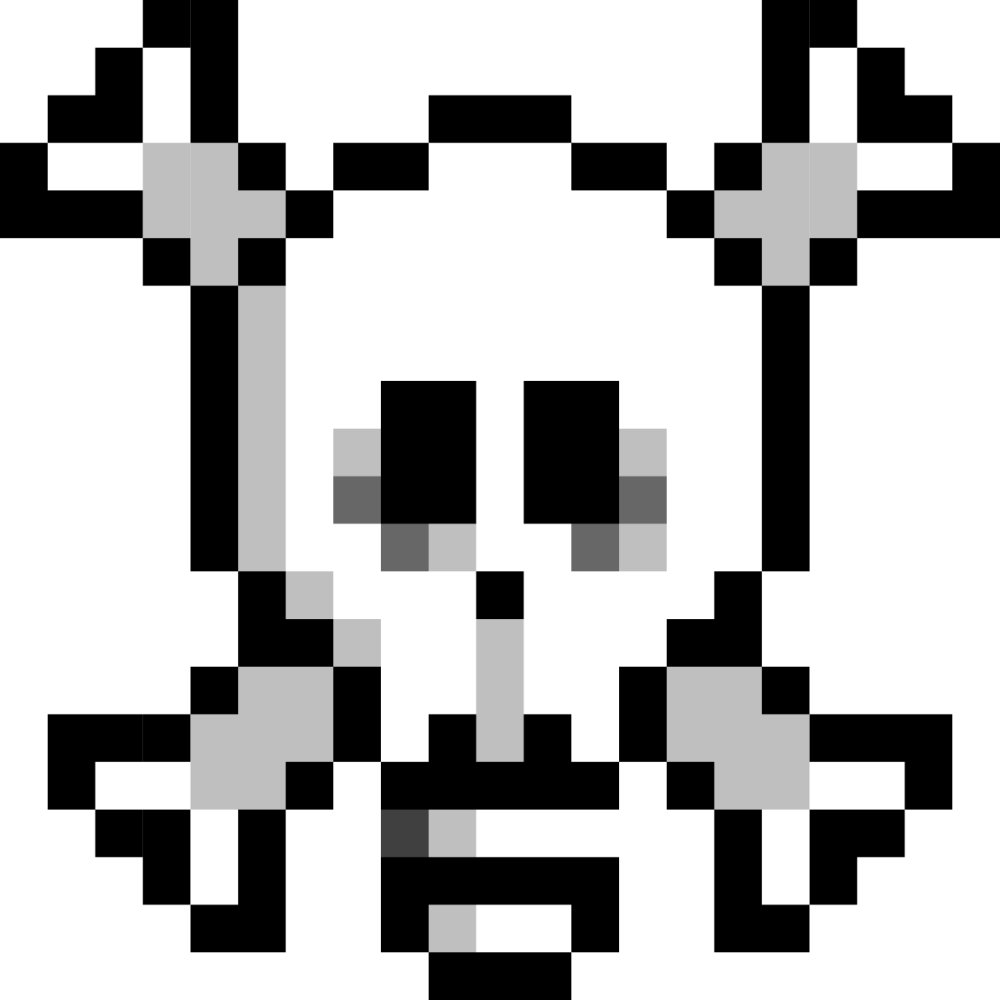

Contato
Laboratório de ideias sobre tecnologia, design, internet e tudo aquilo que parece normal até alguém começar a questionar.
Curiosidade, senso crítico e liberdade para mudar de ideia, despretensioso em ter e saber todas as respostas. Aqui ninguém é oráculo de nada.
Muitas vezes a gente faz pesquisa com o usuário pro cliente… e esquece de perguntar o que a gente mesmo tá sentindo.
Cria mapa da jornada perfeito… e não mapeia a própria jornada de esgotamento.
Defende acessibilidade… e deixa o site próprio cheio de buraco.
Faz usabilidade pros outros… e aceita a própria ferramenta engasgando.
Entrega empatia no briefing… e esquece de ter empatia consigo mesmo.
Tratamos a dor do cliente enquanto carregamos a nossa.
Fazemos descoberta e às vezes não nos descobrimos.
E a última coisa que você vai ver aqui é termo bonito e pomposo.
Porque a vida já é chata o suficiente.
Pra que aborrecer e ainda não ter onde reclamar?
Se quiser ler um artigo,
fazer um desenho,
ver uma propaganda enganosa,
dissecar um termo
ou só procurar as seções… tudo bem também.
Se quiser reclamar, elogiar, mandar um desenho de ressaca ou só falar qualquer coisa:
contato@upixel.com.br
Se tiver coragem, siga:
LinkedIn